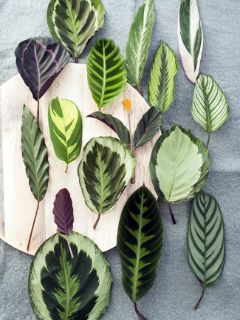

Calathea
Wat ritselt daar?
Bladeren die golven, ribbelen, ronde, spitse of ovale vormen hebben en bovendien niet vies zijn van een patroontje. Maak kennis met de Calathea.
Kleuren en vormen
De kracht en de pracht van de Calathea zit ‘m in zijn bladeren. Ovale beauty’s in verschillende groentinten met af en toe een vleugje paars of roze. Denk streepjes, vlammende patronen of alleen een gekleurde rand. Sommige types hebben daarnaast opvallende oranje bloemen. En dat is nog niet alles. Zodra ‘s ochtends de zon doorbreekt, spreiden die prachtbladeren zich om het licht op te vangen en ‘s avonds sluiten ze zich weer. Zo blijft je plant lekker in vorm.
Symboliek
De Calathea staat symbool voor een nieuw begin. Die betekenis komt van de Engelse uitdrukking ‘to turn a leaf’, wat de plant doet als het donker wordt. Geef de Calathea dus cadeau aan iemand die opnieuw begint. Of aan jezelf natuurlijk, bij het begin van een nieuwe week, een nieuwe haarkleur of gewoon omdat je verliefd bent op de Calathea.
Herkomst
De plant komt oorspronkelijk uit de oerwouden van het Amazonegebied in Zuid-Amerika. Daar leefde hij in de schaduw onder de dichtbegroeide vegetatie. Jouw Calathea is dus helemaal in zijn nopjes in een schaduwrijk hoekje of in een lekker dampende badkamer die niet baadt in het zonlicht.
Deel dit artikel: